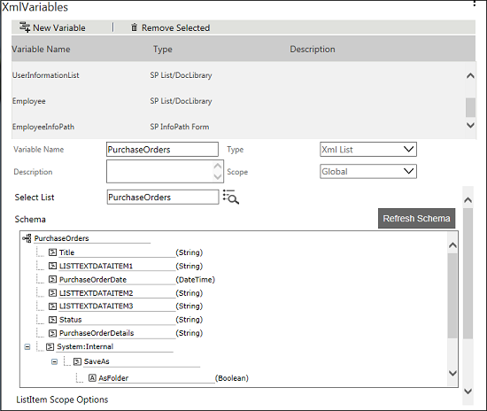
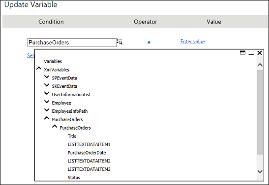
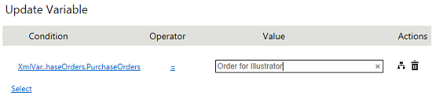

No
Adding a New List Item
AVEVA Work Tasks allows you to add a new list item to the list using XML List XML variables. Update Variable activity can be used to add/update an item to the list. To add an item you need to select the scope as New from Choose the List Item to Work on options. You can also use List Navigator Activity to set the scope. With the help of a scenario, we will explain this function.
Assume that you have created a list called Purchase Orders with the following fields.
- Reference Number
- Purchase Order Date
- Raised By User
- Deliver To User
- Status
- Purchase Order Details
- Item Name
- Quantity
- Unit Price
- Item Total
- Total Purchase amount
Now you want to add items to this list.
To add a new List Item
- Login to the Enterprise Console and launch the Workflow Designer page.
- You need to create an XML List type XML variable for the Purchase Orders list. If the variable is not created, follow the below mentioned procedure to create.
- Click the edit icon in the XMLVariables property from the Start Activity Properties. The following screen is displayed.

- Click New Variable to add a new variable.
- Type the variable name as 'purchaseorders'.
- Select XML List from the Type drop-down list.
- Type the List name in the Select List field or click the
 icon to select the list. In this case, select Purchase Orders list.
icon to select the list. In this case, select Purchase Orders list.
 - Select New as the scope from the ListItem Scope Options to point to a new item in the Purchase Orders list.

- Now you can see the XML nodes in a tree-view that are mapped to the controls while creating the list.
- Click Save Variable. A message is displayed saying 'Variable Updated'. Close the window.
Note: If you set the scope as Current while creating the XML List type XML variable, you can change it in to New using List Navigator activity. - Drag and drop Update Variable activity to add an item to the list.
- Click the edit icon in the Set Variable property. The following screen is displayed.

- Click the Select link and select the respective field of the XML List type XML Variable created for the list (in this case purchaseorders). The fields displayed in the tree-view represent the XML nodes of the controls in the list.
 - Select a field for which you want to set the value, from the tree-view and enter the value for the field in the right-hand side text box, or you can use the icon to set the value.

- If you want to set the value, select enter a value from the tree-view, and then enter the value. Also you can select variables or contents or any XML Variable nodes directly by selecting the respective node from the tree-view. If you want to combine multiple node values, you can build an expression by selecting Build Expression.
 - In the same way, you can set the value for all other fields in the list for the new item. Make sure to specify the values for all mandatory fields of the list.
- After setting the value for the entire field, click OK. When you execute this workflow, a new item will get added based on the value that you have set.